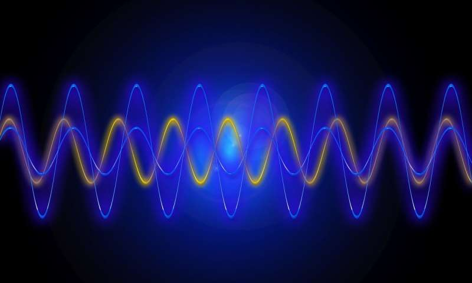

A trio of physicists with Columbia University is making waves with a new theory about phonons—they suggest they might have negative mass, and because of that, have negative gravity. Angelo Esposito, Rafael Krichevsky and Alberto Nicolis have written a paper to support their theory, including the math, and have uploaded it to the xrXiv preprint server.
Most theories depict sound waves as more of a collective event than as physical things. They are seen as the movement of molecules bumping against each other like balls on a pool table—the energy of one ball knocking the next, and so on—any motion in one direction is offset by motion in the opposite direction. In such a model, sound has no mass, and thus cannot be impacted by gravity. But there may be more to the story. In their paper, the researchers suggest that the current theory does not fully explain everything that has been observed.
Read more

In recent years, physicists have come up with a word to describe the behavior of sound waves at a very small scale—the phonon. It describes the way sound vibrations cause complicated interactions with molecules, which allows the sound to propagate. The term has been useful because it allows for applying principles to sound that have previously been applied to actual particles. But no one has suggested that they actually are particles, which means they should not have mass. In this new effort, the researchers suggest the phonon could have negative mass, and because of that, could also have negative gravity.